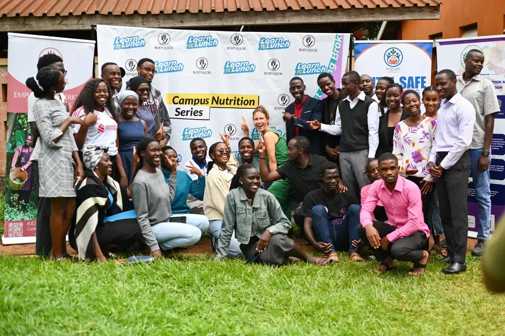
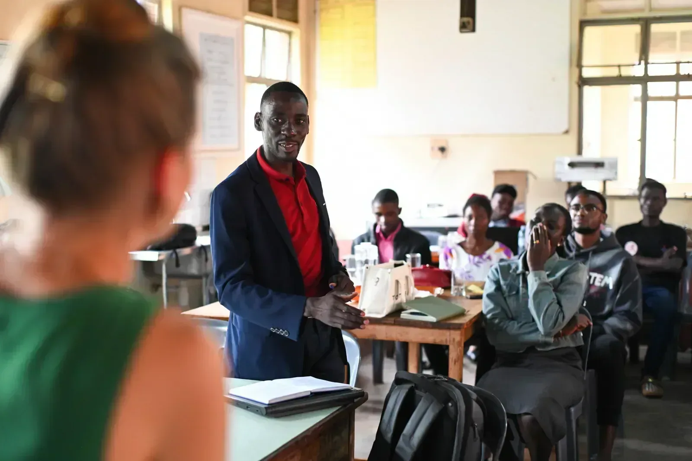
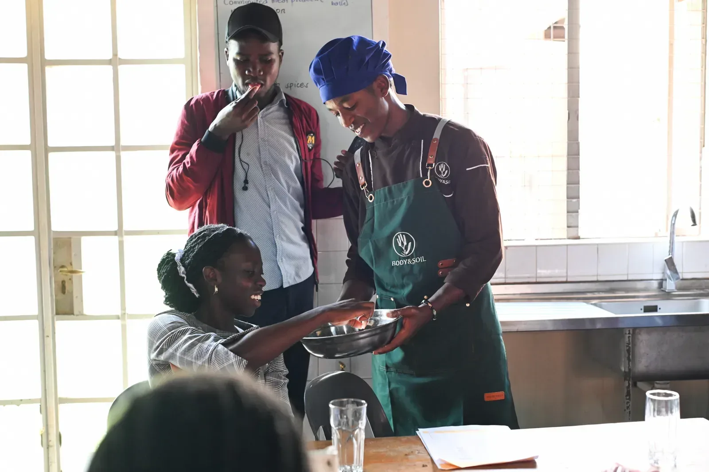
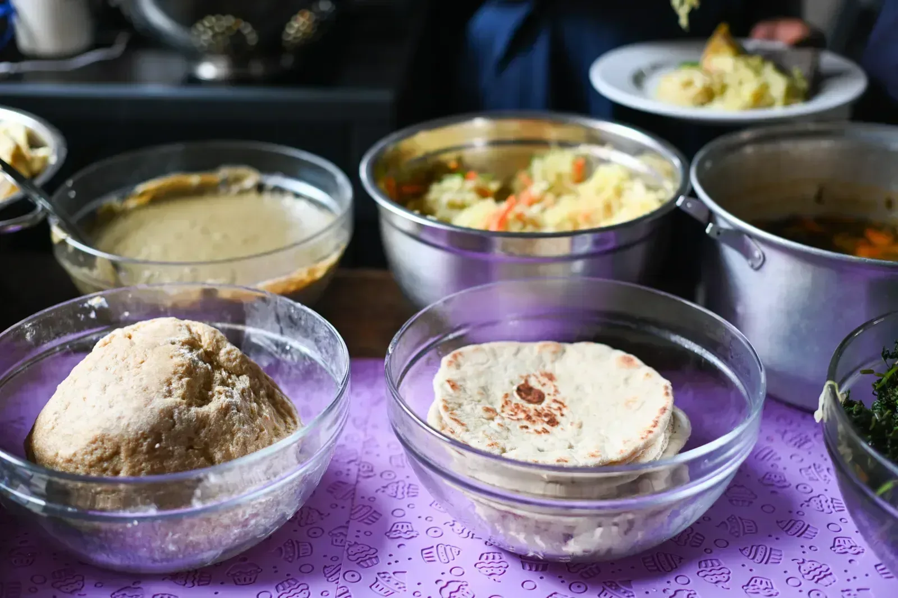

Practical nutrition classes on campus. Students learn how food fuels learning, cook affordable alternatives with expert chefs, and leave with skills they can use the same day.
Piloted at Kyambogo University · 25 April 2026

Photo: BODY & SOIL
Students at the first session
31
Student leaders from campus societies
25
Partner organisations
3
What happens in a session
01
Learn
A practical nutrition class on how food fuels the body, like the role of carbohydrates, and which affordable foods keep students full, energised and able to focus. Led by agro-nutritionist Eva Maria Schiffer, Director of BODY & SOIL.
02
Cook
BODY & SOIL chefs lead a hands-on cooking session. At the first class, students learned to make and cook with bean flour, an affordable way to eat beyond a single staple food.
03
Share
Students talk openly about what eating well really looks like on their budgets and around their campus, so the next steps start from lived experience.
04
Lead
Participants are leaders of student societies, so what they learn travels back to their members and into campus life.
The first session: Kyambogo University
On 25 April 2026, we launched the Campus Nutrition Series at Kyambogo University in partnership with BODY & SOIL and Nutri-Safe Communities, in collaboration with the Kyambogo University Nutrition & Dietetics Students Association (KYUNDSA).
31 students took part, including 25 student leaders from diverse student societies. Some study agriculture, nutrition and science; others lead cultural associations. The class paired a baseline nutrition lesson with a hands-on cooking session, and it was also a pilot: a chance to understand what students truly need.

Photo: BODY & SOIL
After the lesson, BODY & SOIL chefs moved the class into the kitchen. Students made and cooked with bean flour, and tasted dishes that go beyond a single staple food.

Photo: BODY & SOIL

Photo: BODY & SOIL
Yes, people need to understand nutrition to make informed decisions about what's on their plates, but they also need solutions they can actually afford — beyond relying on just one staple food.
Eva Maria Schiffer, Director, BODY & SOIL
What students told us
Students confirmed what we set out to understand. Many cannot afford good food or a diverse diet, and there are very few nutritious options where they study. Street vendors and canteens mostly sell greasy, carbohydrate-heavy food. Beans are sometimes available; vegetables are rare.
Why a class is only the start
A class helps students make healthier choices, but it cannot change the food around campus on its own. That is why the Campus Nutrition Series sits alongside our other practical work: Millu, testing more predictable meal access, and Campus Gardens, exploring food production with students. Next, we want nutrition education to reach everyone in the campus food system, from students to street vendors and university staff.
What's next
Together with BODY & SOIL and Nutri-Safe Communities, we plan to bring the Campus Nutrition Series to more universities across Uganda.
When students are nourished, they are able to think, study, and lead. And that is where real systemic change begins.
On March 28, 2026, Learn And Lunch visited Body and Soil Africa in Mityana to explore a partnership tackling campus hunger — not through temporary food relief, but by empowering students with the knowledge and skills to become active participants in sustainable food systems